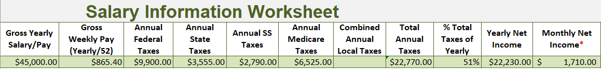

Thus far, the school year has been challenging. Because of the high expectations placed on students by their parents and teachers, our stress levels have risen significantly. For me, I often found myself stressed because of multiple deadlines fast approaching. Not only have there been many projects this year, but more often than not, multiple tests for different classes have piled up on the same week or even day. Due to the stressful climate of school, I have developed several new strengths. During the school year, I have learned to prioritize more important tasks over others and how to study more affectively. One project that taught me how to prioritize more important tasks over others was the World History Propaganda Poster project. This project had three components, a poster, a statement describing the poster, and a statement describing the history behind the poster. Before I even completed the poster I tried to write my statements about the piece. This caused me a lot of confusion and stress because essentially, I was working backwards. This project was one only of the many that I would learn the same lesson from. During the Individual Role project from Language Arts, I relearned the previous lesson. This project consisted of three parts or artifacts. Artifact one was an informational essay about what I thought an individual’s role in society was, artifact two was an illustrated children’s book about the topic, and artifact three was an oral presentation regarding artifacts one and two. Again, during this project my priorities where not in order. Before I had even finished the essay, I had begun to write my book. This also caused me some confusion because I had not fully developed my opinion on what an individual’s role in society was. Before I could continue the project, I had to sit back, and re-evaluate my priorities. During the first semester I also developed better study skills, this was a result of my biology class. Even though biology is my favorite topic, I struggle the most with it. Because we cover so many new terms in biology at a fast pace, it is sometimes hard to keep up with the quizzes and tests. At the beginning of the school year, I struggled while taking tests and quizzes because I did not know how to study affectively. In previous years, I have not felt the need to study before a test because I understood the content well. Now, I have learned that to study in order to succeed. Some study methods that I now use include writing notes and making up songs about course materials. To conclude, during first semester I have learned which tasks to prioritize and how to study more affectively. I learned how to prioritize more important tasks over others in my History and Language Arts class, I also learned which study methods worked best for me. These skills will help me pursue further education as I go through High School and College.
The Parabola Project
One of my favorite projects was definitely the Parabola Project. In this project, we found parabolas common in nature and then graphed them. The first step was to find a picture, then find the parabola in it. Secondly, we opened the picture in Desmos and plotted the vertex and slope. After the equation was found in standard form, we converted it to intercept form. Lastly, that information was put on a poster. When we were looking for parabolas, I noticed a lot of architecture is influenced by math which was interesting to me, although math is not my strong suit, I am very interested in architecture and engineering.
The Cholesterol Infographic Project
The cholesterol project was where students created a poster, infographic, newsletter, or website to teach about cholesterol. I learned about the different types of cholesterol and their effects on the body. I also learned ways to lower and raise certain types of cholesterol. I learned about how LDL cholesterol can increase a person’s risk of stroke and heart disease and about how HDL cholesterol can lower LDL cholesterol. I also learned what types of foods raise cholesterol. Then, I made an infographic to teach people about cholesterol. The infographic includes information about cholesterol, types of cholesterol, and ways to manage it.
The Colony Poster Project
For the Colony Poster Project, my group and I created a poster about the Italian colonization of Ethiopia. Our poster was made to look like it was created a long time ago and its purpose was to demand Ethiopia’s freedom. During this project we learned about how and why Italy colonized Ethiopia and then we created a statement that describes our poster and its purpose. Here is the artist statement, “This poster is a propaganda poster for Ethiopia that encourages Ethiopians to resist Italy’s advancements. The arm reaching towards the country is the colors of Italy’s flag. This symbolizes Italy trying to control Ethiopia from across the sea. The other hand grabbing Italy’s wrist shows how Ethiopia is stronger than Italy. The country, Ethiopia, is the colors of its flag.” I had a fun time during this project because I learned some history about Ethiopia and Italy while getting the chance to be creative.
The Trial By Fire Budgeting Project
The Trial By Fire Budgeting Project was my favorite project this year. During the project students experienced what financial life after high school could be like. We chose careers, went to job interviews, bought cars, and even got a credit score. The steps to this project are pretty simple; first we went to college and paid off our student loans, then we found a job and had an interview, third we rented apartments and bought cars, and lastly calculated our personal expenses such as food and hygiene products. While we were gathering this information, we were also putting it into a spreadsheet. Once all the information was found, we calculated our yearly budget. After our yearly budget was completed, we then wrote journal entries about adult-life. This project was really fun for me because it gave me insight into what my future might be like.
